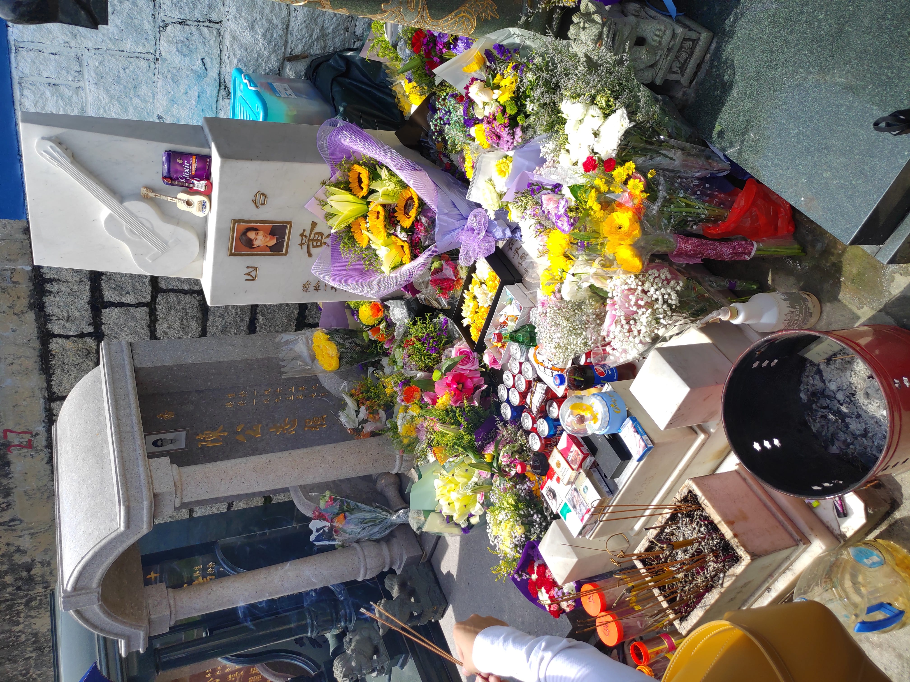

大学的时候，看过一本书叫《何日君再来》，里面讲了陈百强、张雨生、邓丽君、黄家驹等英年早逝的歌手，他们代表了一个时代，随即写了这首怀念家驹的词，以表达对民谣和摇滚的无比的热爱
何日君再来
——写给黄家驹
冷雨夜，情人泪。
岁月悄无声，年年此期年年恨。
亘古长城，塞外狂人。 百年繁华一朝尽，
重温光辉岁月。 旧足迹，灰轨迹。
慈母千言真爱你，朝朝空虚朝朝忆。
异乡大地，理想犹记。
前路莫须再犹豫，赢得海阔天空。
凭栏眺，忆家驹，思悠悠。
注释：冷雨夜，情人，岁月悄无声，长城，狂人，光辉岁月，旧足迹，灰轨迹，真爱你，空虚，大地，理想，犹豫，海阔天空分别代表了BEYOND的14首经典之作。 题记：谨以此诗献给已逝的家驹，感谢家驹，感谢BEYOND带给我们美好的音乐
赏析：阴冷的雨夜，你想起了情人的眼泪，但是那一段日子终究是逝去了，岁月无声无息的过去了，而我们还是身各一方，年年的这段时间总能想起曾经这个季节我们在一起的点点滴滴，也是在年年这个时期恨自己的过去。（这是情人这首歌的真实由来，就是家驹为怀念女友而作）
亘古不变，穿越了千年的长城，还有塞外那狂妄的少数民族，增经占领，一统过中原，
但是纵观古代的少数民族的统治，百年的繁华总是一朝尽灭，中原百姓奋起反抗，在造就光辉的帝国，不朽的岁月（并不都是歌曲的本意，但是却从中能体现出家驹歌中爱国的一面）
旧日的足迹已经过去，踏着灰色的轨迹继续前进，生活，每当这时，耳中回荡起母亲的千言叮嘱，关注，我真想说声：“真的爱你”，每天当我空虚彷徨的时候，总能记起母亲的叮咛，笑容，指引我跌到不应该放弃（基本上是歌的本意，家驹从小就是个怪癖的孩子，曾经年少叛逆，母亲给了他很大的帮助）。
他乡的土地令我想起故乡，父亲笑容时的脸旁，曾经的理想仍然牢牢的记着，但是达到理想不太容易，以后的路不再犹豫，奋勇直前，超越自我，直到最后，理想达成，赢得海阔天空（基本上是歌的本意，希望通过BEYOND的歌能激励那些还在彷徨无助的人们）。
站在宿舍的窗台上，扶着栏杆，回忆着家驹和他的歌，思绪纷杂，杂乱，望着远方，不禁感叹何日君再来！！！
2019年6.30号那天我来到香港黄家驹的墓碑，每年的这一天，都有各地的粉丝来到这里纪念黄家驹，纪念一个逝去的时代
